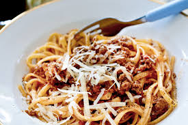

Pasta Bolognese är en klassisk italiensk rätt med köttfärssås och pasta.
Följ stegen nedan för att laga en enkel och smakrik middag.

Ingredienser för Pasta Bolognese
- Spaghetti (100 g per person)
- Nötfärs (150 g)
- Lök (1 st)
- Vitlök (2 klyftor)
- Krossade tomater (400 g)
- Tomatpuré (2 msk)
- Morot (1 st)
- Olivolja (2 msk)
- Salt och peppar
- Parmesanost
Kalorier i vanliga ingredienser
| Ingrediens |
Mängd |
Kalorier (ca) |
| Spaghetti |
100 g |
350 kcal |
| Nötfärs |
150 g |
330 kcal |
| Lök |
1 st (100 g) |
40 kcal |
| Krossade tomater |
400 g |
80 kcal |
| Tomatpuré |
2 msk (40 g) |
35 kcal |
| Morot |
1 st (70 g) |
30 kcal |
| Olivolja |
2 msk (20 g) |
180 kcal |
| Parmesan |
20 g |
80 kcal |
Steg för att laga Pasta Bolognese
- Hacka lök, vitlök och morot fint.
- Fräs grönsakerna i olivolja tills de mjuknar.
- Tillsätt nötfärsen och stek tills den är genomstekt.
- Blanda i tomatpuré och rör runt.
- Häll i krossade tomater, krydda med salt och peppar.
- Låt såsen småputtra i minst 20 minuter.
- Koka spaghettin enligt anvisningarna på paketet.
- Servera pastan med såsen och toppa med parmesan.